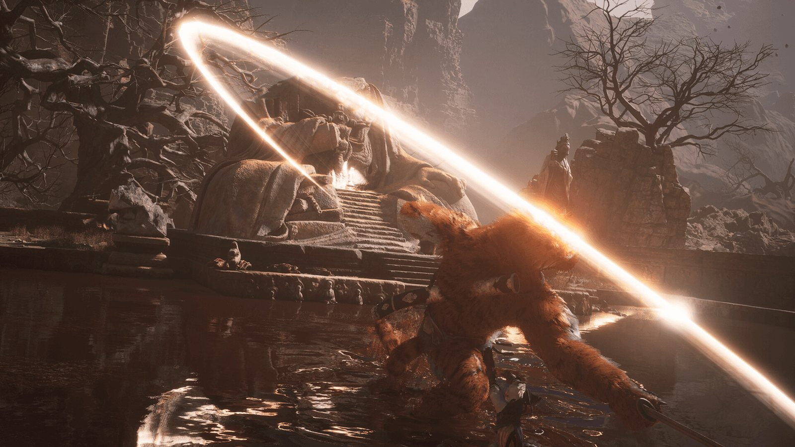
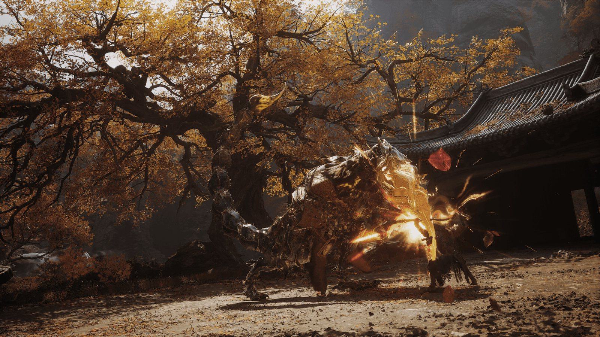

定
定身术
定住眼前之敌，为自己争一息。对霸体与大型妖王效果有限，别把它当成万能暂停键。
战术 · 控场一根棍，三种握法，六道法术。它看着简单，真打起来却像写字：起笔、行笔、收笔，差半寸就散了。
高举重落，一击定音。劈棍的蓄力段最长，也最容易被读；真正好用的不是满蓄，而是对方出招之后那半拍的空门。
撑棍而立，扫开一圈。立棍攻守兼备，被围住时最好用；代价是棍势攒得慢，别指望它一套带走。
直取一点，破防最强。戳棍前摇短、距离长，适合打断与追击；但打空之后的后摇，足够对方还你一刀。
定住眼前之敌，为自己争一息。对霸体与大型妖王效果有限，别把它当成万能暂停键。
战术 · 控场化烟而走，留下一个假身。用来脱困、绕背、躲大招，是这套战斗里最像「猴」的一招。
身法 · 脱战拔一把毫毛，吹出几个分身替你打。人越多越好用，尤其适合清场与打断。
输出 · 群战画地为圈，圈内回血、圈外难入。守点、读招、喘口气，都靠它。
生存 · 阵地短时间硬如金石，能扛下重击。它不是无敌，别拿来赌命。
防御 · 硬扛倒下时留一线生机，是最后的保险。用掉之前，你不会知道它有多贵。
被动 · 复活借狼妖之身，快、狠、带火。变化不是换皮，是换一套出招逻辑。
收妖之精魄，化为一次性的杀招。用对了是处决，用错了是空大。
身外身法召出的分身会替你吸引仇恨，也能补上最后一点伤害。
六根归位，棍势与法术的上限才真正打开。急不来，一回一根。
葫芦是命，泡酒物是命里的甜头。先升级次数，再考虑回复量。
套装给的是容错，珍玩给的是偏科。开荒先保命，熟练后再堆伤害。
灵光点有限，先点常用棍势与核心法术，别做「样样通、样样松」。
法宝决定一场战斗的开局，精魄决定收尾。按敌人换，不要一套穿到底。
看招比出招重要。多数倒地不是因为不会连段，是因为不肯松开攻击键。
识破的窗口比想象中短。与其背帧数，不如记住每个敌人抬手前的那一下停顿。
开局就定，等于把一次免费输出换成一次普通硬直。留到对方要放大招、或你要收尾的时候。
高低差会改变棍势的命中；窄处利于立棍解围，宽处才适合劈棍蓄满。
这个游戏没有唯一的解法。换法宝、换精魄、换棍势，比在原地硬磕十次更省时间。
以上拆解基于游戏实际战斗系统与个人体验整理，四维数值为示意条，不代表官方数据。
— OFFICIAL STILLS · 剧照
官方游戏截图：棍势起落、金石相击。画面版权归游戏科学（Game Science）所有。

